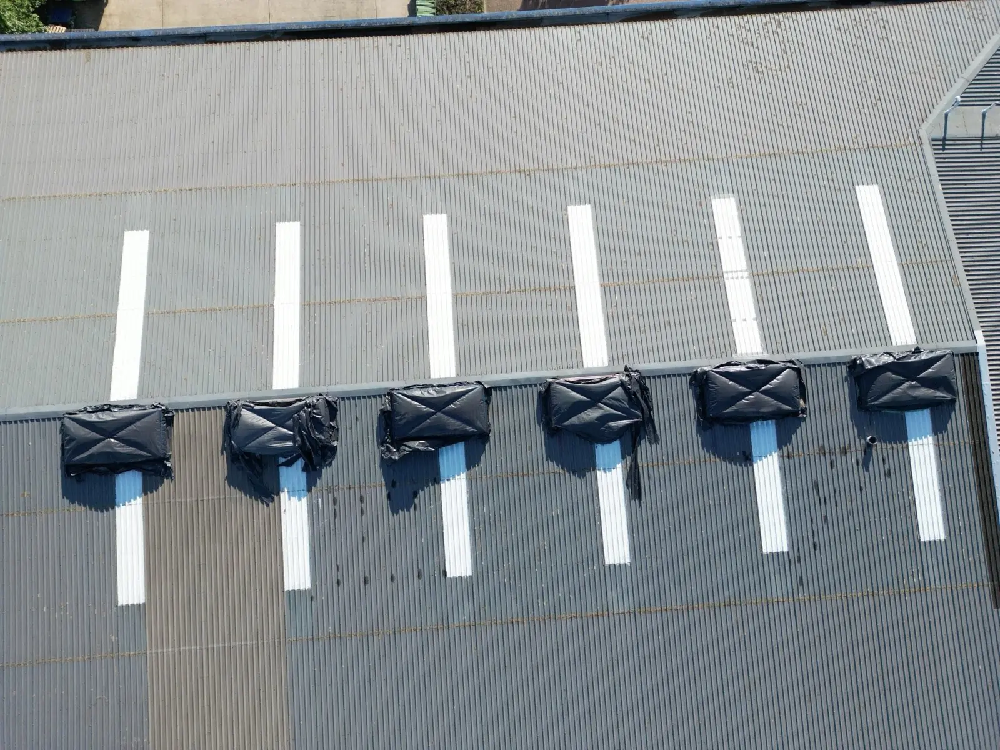
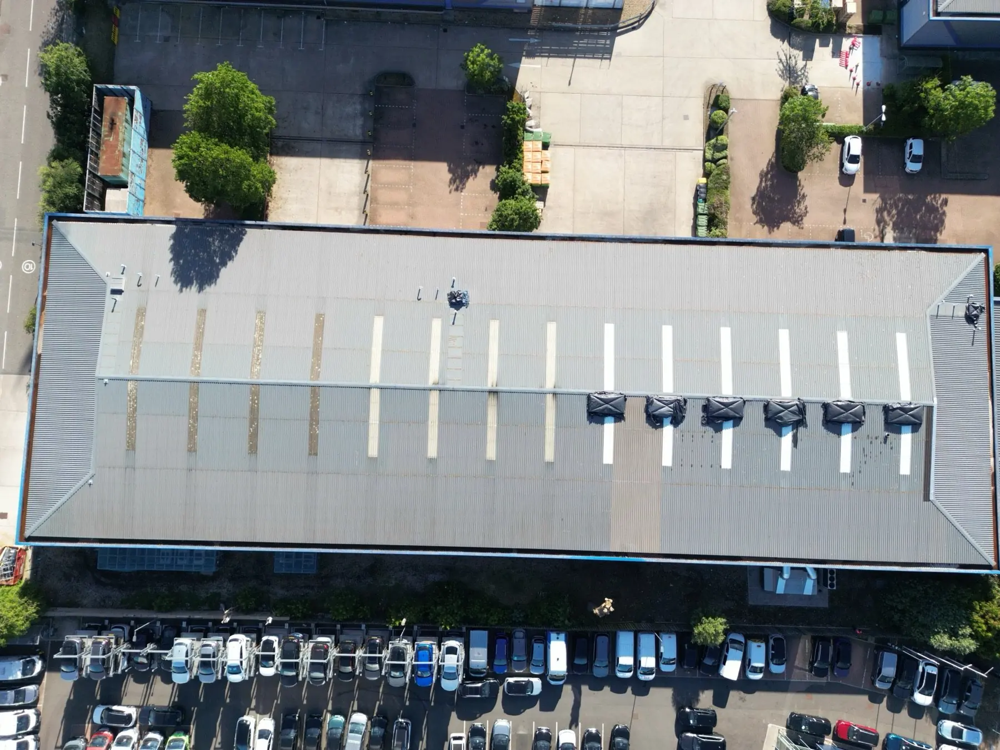
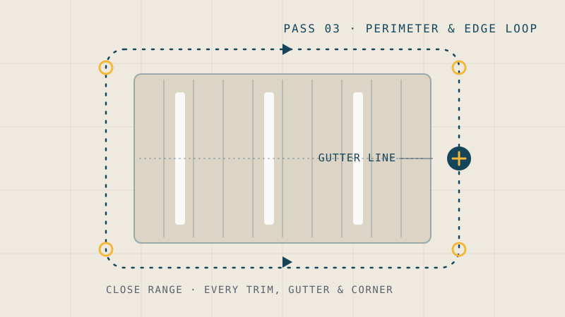
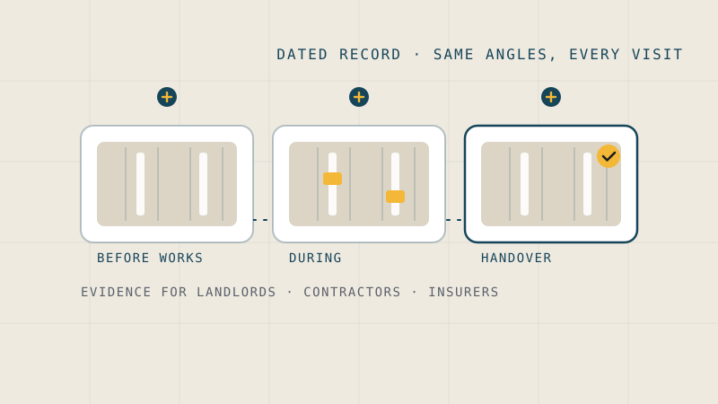

Full coverageRoof condition surveys
Full-coverage stills of every slope, ridge, valley and fixing line. The whole roof in one dated record, sharp enough to count individual screws.
Drone roof & building surveys, London & South East
High-resolution drone surveys of roofs, gutters and hard-to-reach structures, organised into a clear photographic record you can act on. No scaffold. No ladders. No roof contact.


What we survey

Full coverageFull-coverage stills of every slope, ridge, valley and fixing line. The whole roof in one dated record, sharp enough to count individual screws.

Perimeter passPerimeter passes along gutters and roof edges that show corrosion, blockages and failed trims up close. The areas ladders reach worst and surveys skip first.
RepeatableCheck temporary coverings, fragile-surface lines and rooflights without putting a boot anywhere near them. Repeat the same pass later to prove change, or prove none.

Dated evidenceDated photographic evidence for landlords, contractors and insurers. Before works, during, and at handover, shot from the same angles every time.
Why drone
Scaffold or tower access
Drone survey
We provide the photographic record. Structural judgements stay where they belong: with your surveyor, contractor or insurer, who now works from complete evidence instead of a corner glimpsed from a ladder.
The five-pass method
Not a pile of photos. A repeatable structure. Each pass has a job, and the record is filed by pass, so anyone can navigate it without us in the room.
The building in its surroundings: orientation, access, neighbouring structures.
Neighbouring roofs and elevations that affect, or are affected by, the subject building.
A slow lap of every gutter line, trim and roof edge at close range.
The areas that matter, frame-filling and sharp: coverings, penetrations, repairs.
Top-down lines over the full roof plane, the view no ladder ever gets.
Recent work
Temporary roof coverings and a rooflight line, photographed without a single boot on the roof. Every image below is from the actual survey record. Client confidentiality is standard: no names, no locations, and nothing published without written consent.


The exact format your record arrives in: findings, ratings and imagery, page by page.
Our promise
We plan each survey like it matters and fly it like it's our own roof. Nothing rushed, nothing guessed, nothing left to luck. Pilot qualifications (A2 CoC and GVC) are in progress; bookings open on certification, and early enquiries are very welcome now.
Straight answers
Most single-building surveys are captured within the hour. We arrive, run the airspace and site checks, fly the five passes, and you get on with your day. No access equipment, no closures, no fuss.
A dated photographic record of 48 MP stills and 4K video, filed by flight pass so you can navigate it without us in the room. Shared privately with you, and only you. See a sample report for the exact format.
Each survey is scoped on the roof itself: size, access and airspace. Send the property type and rough location and you'll have a straight quote within 24 hours. If you already have a scaffold or cherry picker quote, send that too and compare the two.
Airspace is checked before every flight. Most sites in London and the South East are flyable; some need extra permissions or coordination, and we tell you that up front, before anything is booked.
Every flight is planned and flown within UK CAA rules. Pilot qualifications (A2 CoC and GVC) are in progress. Commercial bookings open on certification and insurance, and early enquiries are very welcome now.
Your survey
Share the property type and rough location. You'll get a straight answer on what a survey would capture, how long it takes, and what it costs.
Prefer email? Write to surveybrouservices@outlook.com